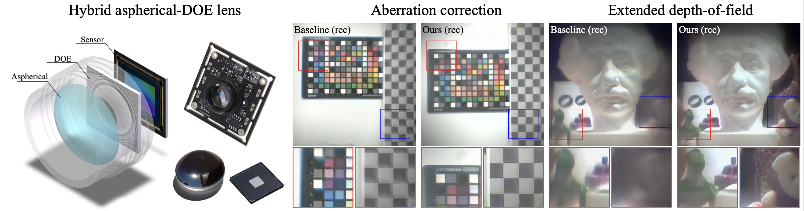

End-to-End Hybrid Refractive-Diffractive Lens Design with Differentiable Ray-Wave Model.
Xinge Yang, Matheus Souza, Kunyi Wang, Praneeth Chakravarthula, Qiang Fu, Wolfgang Heidrich
Siggraph Asia conference track, 2024.

We propose a differentiable ray-wave imaging model that accurately simulates both aberrations and phase modulation while enabling end-to-end optimization for the hybrid refractive-diffractive lens and the image reconstruction network. To experimentally demonstrate the effectiveness of the proposed model, we present a hybrid aspherical-DOE lens prototype (left) and investigate two applications: aberration correction (middle) and large field-of-view extended depth-of-field imaging (right).
Abstract
Hybrid refractive-diffractive lenses combine the light efficiency of refractive lenses with the information encoding power of diffractive optical elements (DOE), showing great potential as the next generation of imaging systems. However, accurately simulating such hybrid designs is generally difficult, and in particular, there are no existing differentiable image formation models for hybrid lenses with sufficient accuracy.
In this work, we propose a new hybrid ray-tracing and wave-propagation (ray-wave) model for accurate simulation of both optical aberrations and diffractive phase modulation, where the DOE is placed between the last refractive surface and the image sensor, i.e. away from the Fourier plane that is often used as a DOE position. The proposed ray-wave model is fully differentiable, enabling gradient back-propagation for end-to-end co-design of refractive-diffractive lens optimization and the image reconstruction network. We validate the accuracy of the proposed model by comparing the simulated point spread functions (PSFs) with theoretical results, as well as simulation experiments that show our model to be more accurate than solutions implemented in commercial software packages like Zemax. We demonstrate the effectiveness of the proposed model through real-world experiments and show significant improvements in both aberration correction and extended depth-of-field (EDoF) imaging. We believe the proposed model will motivate further investigation into a wide range of applications in computational imaging, computational photography, and advanced optical design.
Paper
Paper [Yang2024HybridLens.pdf (~10MB)]
Supplementary [Yang2024HybridLens_supp.pdf (~35MB)]
Code [https://github.com/vccimaging/DeepLens]